ggplot(data = mpg, aes(x = class, y = hwy)) +
labs(title = "")
ggplot(data = mpg, aes(x = class, y = hwy)) +
geom_boxplot() +
labs(title = "+ geom_boxplot()")
ggplot(data = mpg, aes(x = class, y = hwy)) +
geom_jitter() +
geom_boxplot() +
labs(title = "+ geom_jitter() + geom_boxplot()")How to Make Graphics
Data Types, Formats, and Structures
First Things First!
Before we start creating graphics…
Know the type and format of the data you’re working with.
Why?
the data contains all of the information you want to convey
the appropriate chart depends on the data type
Working with R and ggplot is much easier if the data you use is in the right shape
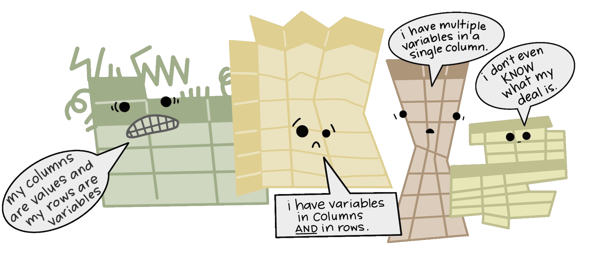
Data: levels of measurement
Quantitative
- Continuous (e.g. height, weight)
- Discrete (e.g. age in years)
Qualitative
- Nominal: categories have no meaningful order (e.g. colors)
- Ordinal: categories have order but no meaningful distance between categories (e.g. five star ratings)
Data: Dimensions and Type
| Dimensions | Types |
|---|---|
| Univariate (1 variable) | Count (word freq, scores) |
| Bivariate (2 variables) | Time Series, Relationships |
| Multivariate (3 variables) | Spatial |
| Time to Event (Survival, Reliability) | |
| Categorical |
Exploring Relationships
TipResources
Data to Viz - figure out what type(s) of chart to use for your data (use with an ad blocker)
Continuous vs. Continuous
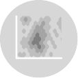
Continuous vs. Categorical
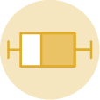
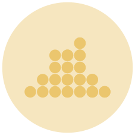
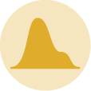
Categorical vs. Categorical
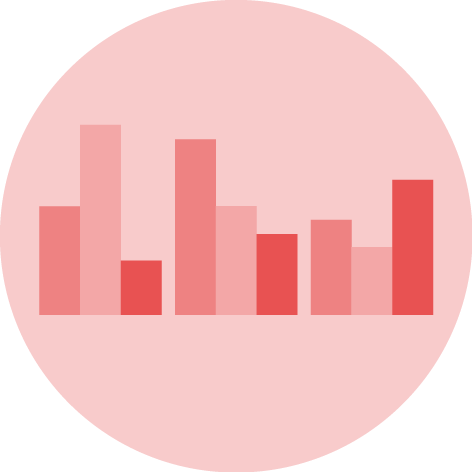
Multidimensional
It depends…
Tidy Data

ggplot2 assumes your data is tidy
Untidy data
Happy families are all alike; every unhappy family is unhappy in its own way. - Leo Tolstoy
Five main ways tables of data tend not to be tidy
Column headers are values, not variable names.
Multiple variables are stored in one column.
Variables are stored in both rows and columns.
Multiple types of observational units are stored in the same table.
A single observational unit is stored in multiple tables.
Tip
AI can be very useful to help you find the right R commands to move from untidy to tidy data.
Other resources: Reshaping Data, a chapter in Statistical Computing in R and Python (free website)
ggplot2

ggplot2 basics
ggplot2 is based on the grammar of graphics - every chart is based on the same components:
- a data set,
- coordinate system,
- geoms – visual marks that represent data points
Values from the data set are mapped to properties of the geom using aesthetics like size, color, and/or x and y location
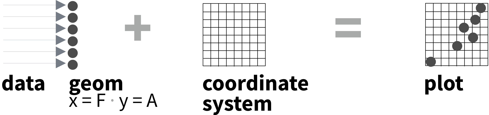
ggplot2 basics
ggplot2 is based on the grammar of graphics - every chart is based on the same components:
- a data set,
- coordinate system,
- geoms – visual marks that represent data points
Values from the data set are mapped to properties of the geom using aesthetics like size, color, and/or x and y location
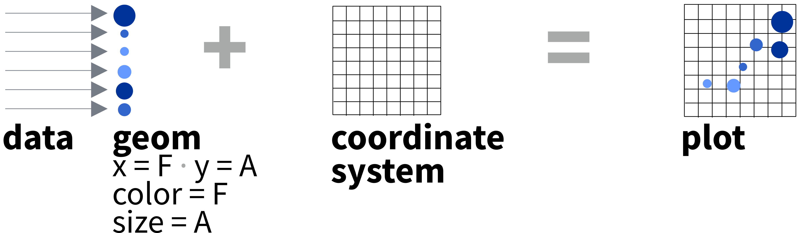
How to build a graph
ggplot(data = mpg, aes(x = cty, y = hwy))
This will begin a plot that you can finish by adding layers to.
You can add one geom per layer
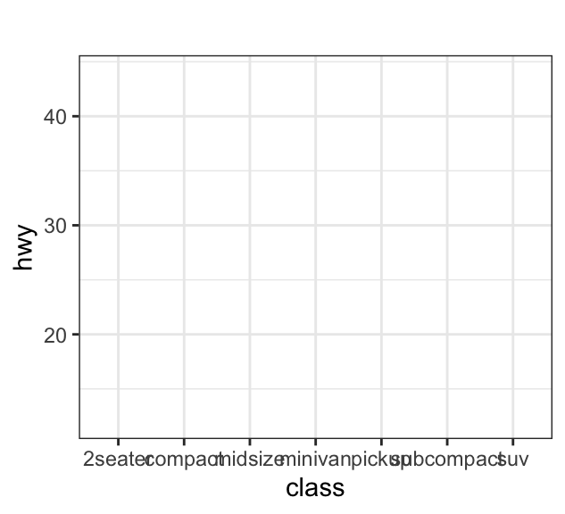
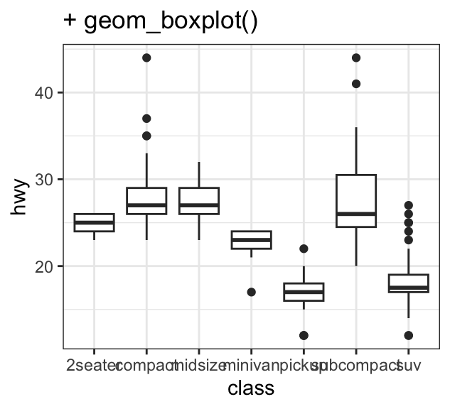
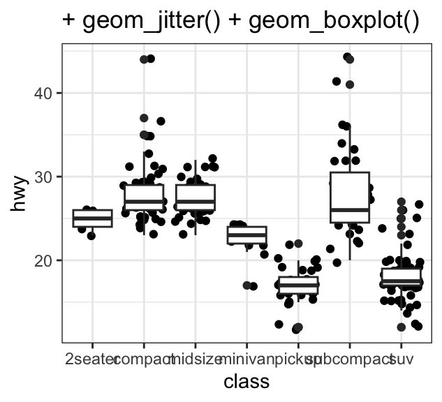
What is a geom?
- A geom function represents data points
- Aesthetic properties represent variables
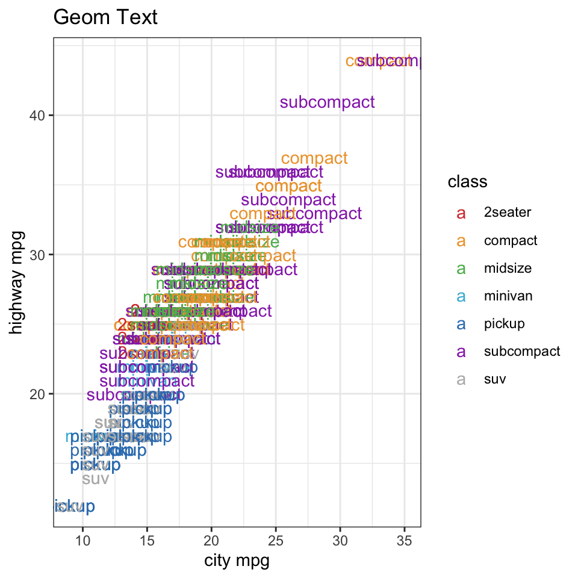
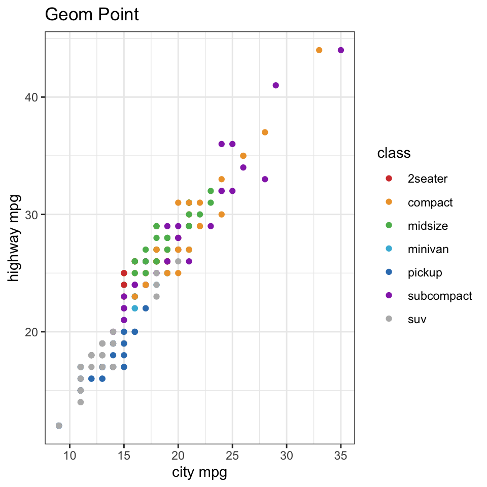
#|
ggplot(data = mpg, aes(x = cty, y = hwy, colour = class)) +
geom_text(aes(label = class)) +
labs(x = "city mpg", y = "highway mpg", title = "Geom Text")
ggplot(data = mpg, aes(x = cty, y = hwy, colour = class)) +
geom_point() +
labs(x = "city mpg", y = "highway mpg", title = "Geom Point")Geom Options: geom_xxx
What is a layer?
Determines the physical representation of the data
Data + mappings + statistical transformation + geom = a layer
A plot may have multiple layers
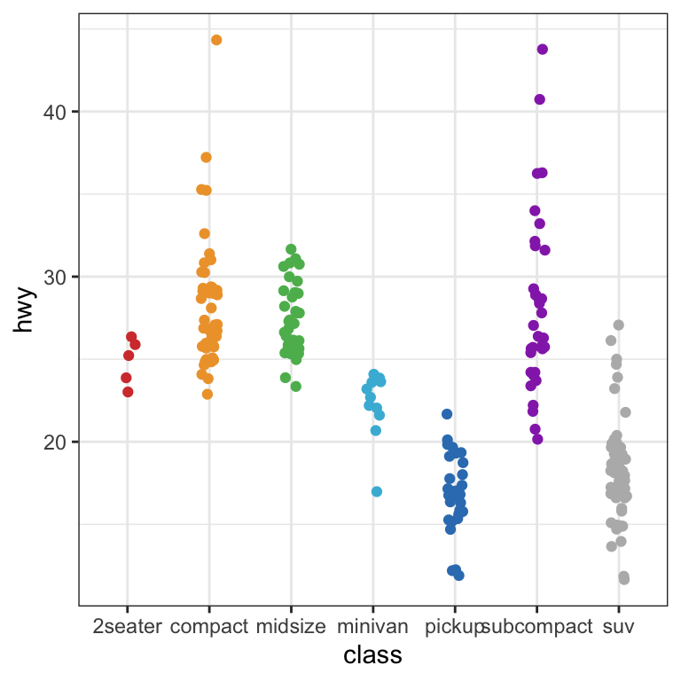
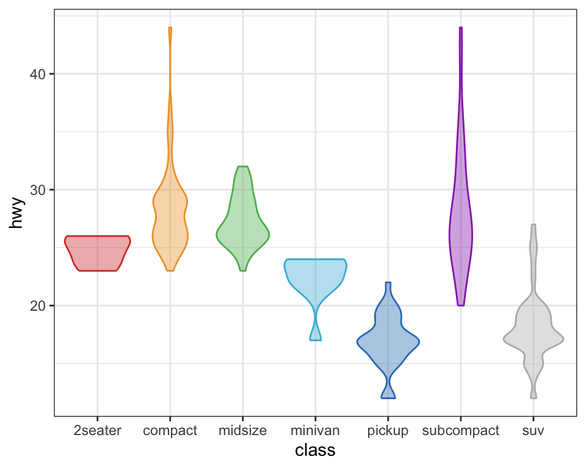
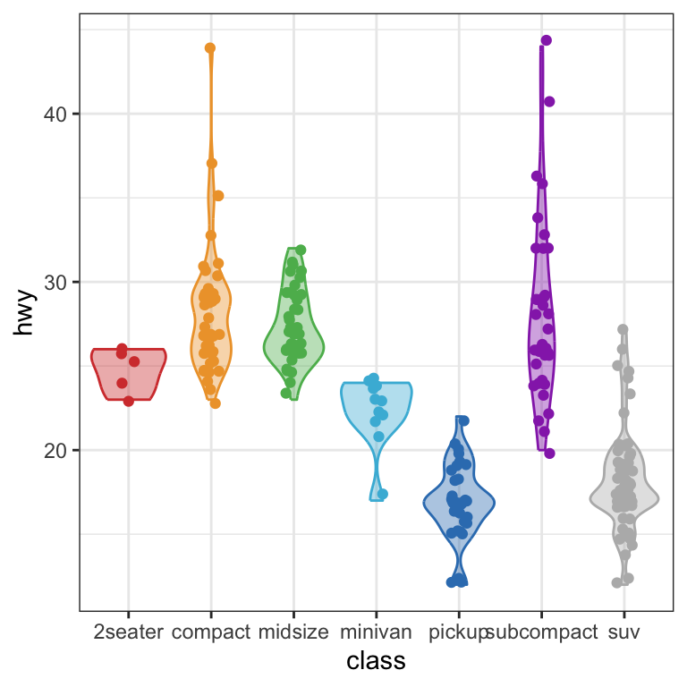
ggplot(data = mpg, aes(x = class, y = hwy, colour = class)) +
geom_jitter(width = 0.1)
ggplot(data = mpg, aes(x = class, y = hwy, colour = class)) +
geom_violin(aes(fill = class), alpha = 0.4)
ggplot(data = mpg, aes(x = class, y = hwy, colour = class)) +
geom_jitter(width = 0.1) +
geom_violin(aes(fill = class), alpha = 0.4)Your Turn
Change the code below to have the points on top of the boxplots.
ggplot(data = mpg, aes(x = class, y = hwy)) +
geom_jitter() +
geom_boxplot()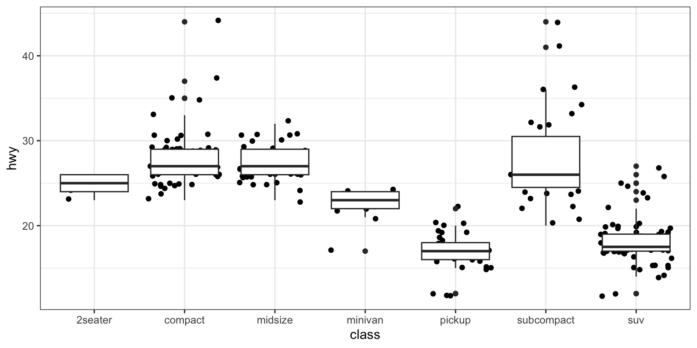
Charts on Parade
Favorite Halloween Candy
Halloween candy preference data
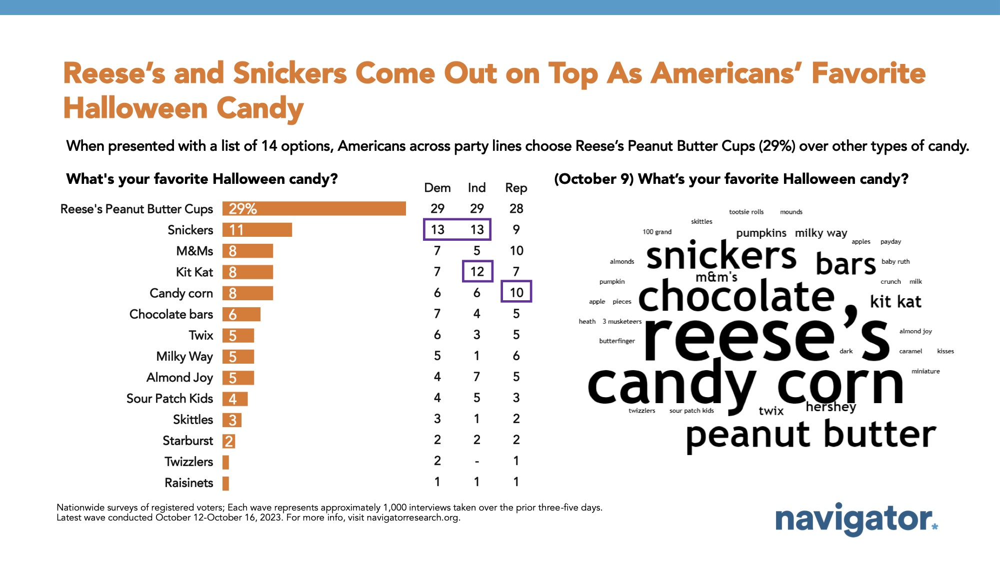
- Doesn’t add up to 100%, so I’ve adjusted “Other” category
We’ll assume 27% Democrats, 27% Republicans, 46% Independents and not consider political party
Favorite Halloween Candy
library(tibble)
candy <- tribble(~candy, ~dem, ~ind, ~rep,
"Reese's", 29, 29, 28,
"Snickers", 13, 13, 9,
"M&Ms", 7, 5, 10,
"Kit Kat", 7, 12, 7,
"Candy Corn", 6, 6, 10,
"Chocolate bars", 7, 4, 5,
"Twix", 6, 3, 5,
"Milky Way", 5, 1, 6,
"Almond Joy", 4, 7, 5,
"Sour Patch Kids", 4, 5, 3,
"Skittles", 3, 1, 2,
"Starburst", 2, 2, 2,
"Twizzlers", 2, 0, 1,
"Raisinets", 1, 1, 1,
"Other", 4, 11, 6)
candy_types <- candy$candy
candy_types_min <- c("Reese's", "Snickers", "Kit Kat", "Candy Corn", "M&Ms", "Other")
library(ggplot2)
candy_sum <- candy |>
# Average over political orientation (weighted by % alignment)
mutate(overall = .27*dem + .46*ind + .27*rep) |>
# Sort in descending order by proportion
arrange(desc(overall)) |>
# Set bar order and create labels that are single-decimal values with % sign
mutate(candy = factor(candy, levels = candy_types, ordered = T),
label = sprintf("%0.1f%%", overall))
candy_short <- candy_sum |>
# Collapse so that we have only a reasonable number of categories
mutate(candy = str_replace_all(candy, "Raisinets|Twizzlers|Starburst|Skittles|Sour.Patch.Kids|Milky.Way|Almond.Joy|Chocolate.bars|Twix", "Other")) |>
group_by(candy) |>
# Calculate "Other" total proportion
summarize(overall = sum(overall)) |>
# Order of categories by size, with other at the end
mutate(candy = factor(candy, levels = candy_types_min, ordered = T)) |>
# Arrange the table in descending order
arrange(desc(candy)) |>
# Calculate label position as (everything to that point) + 1/2 of label value
mutate(pos = overall / 2 + lag(cumsum(overall), 1, default = 0),
label = sprintf("%s %0.1f%%", candy, overall))ggplot(data = candy_sum,
aes(x = candy, y = overall,
fill = candy)) +
geom_col() +
geom_text(aes(label = label),
hjust = -0.1) +
coord_flip() +
ylab("Percent") +
xlab("") +
ggtitle("Favorite US Halloween Candy") +
scale_y_continuous(limits = c(0, 35)) +
guides(fill = "none") 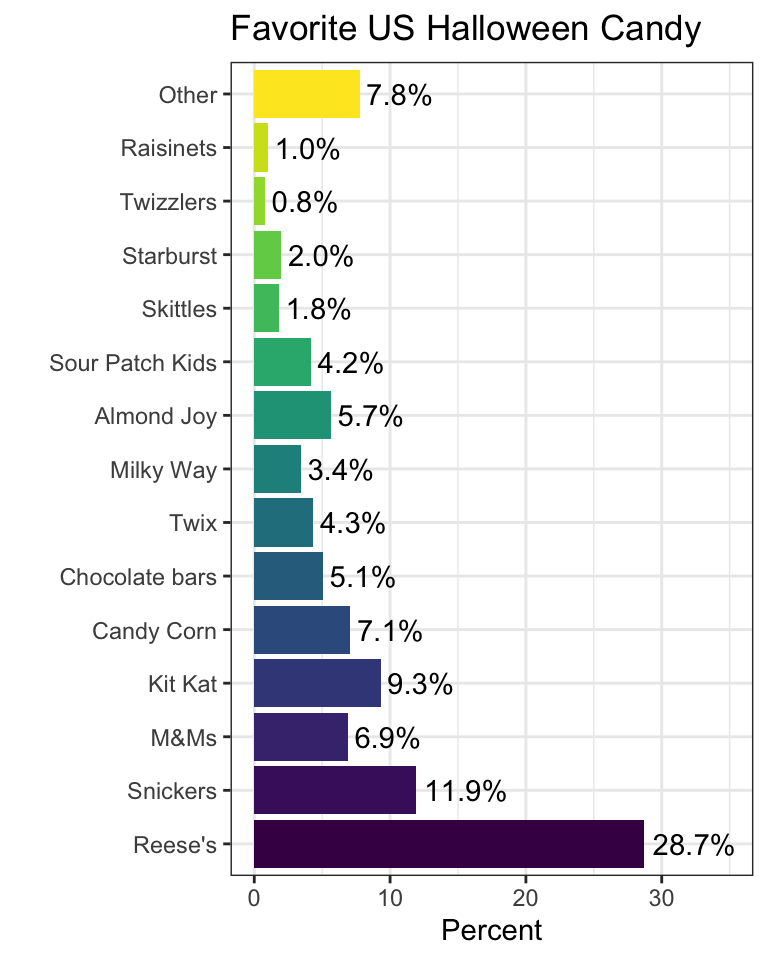
Favorite Halloween Candy
Define base plot and extra theme bits:
base_plot <- candy_short |>
ggplot(aes(x = candy,
y = overall,
label = label,
fill = candy,
color = candy))
labels <- list(ylab("Percent"),
xlab(""),
ggtitle("Favorite US Halloween Candy"),
guides(fill = "none", color = "none"))
stack_extras <- list(theme(panel.grid = element_blank(),
axis.text.x = element_blank(),
axis.title.x = element_blank(),
axis.ticks.x = element_blank()))
polar_extras <- list(theme(axis.text = element_blank(),
axis.title = element_blank(),
axis.ticks = element_blank(),
panel.grid = element_blank()))Favorite Halloween Candy
base_plot +
geom_col() +
labels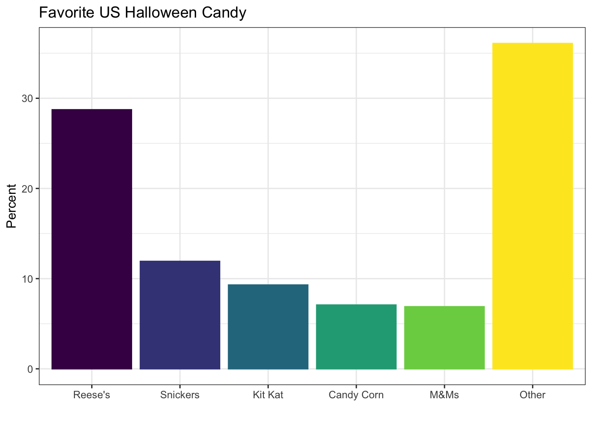
Favorite Halloween Candy
Basic Bar Chart
base_plot +
labels +
geom_col(aes(x = candy),
position = "identity" ) +
geom_label(aes(x = candy),
text.color = "black",
fill = "white",
size = 3)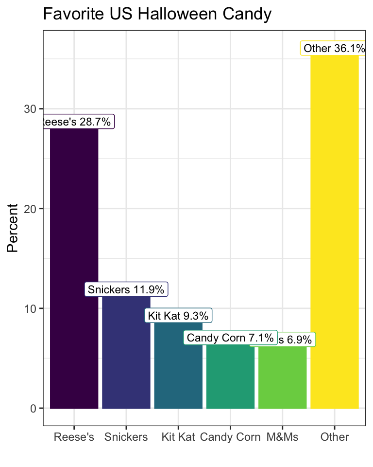
Favorite Halloween Candy
Position: Stack
base_plot +
labels + stack_extras +
geom_col(aes(x = 0),
position = "stack") +
geom_label(aes(x = 0, y = pos),
text.color = "black",
fill = "white",
size = 3)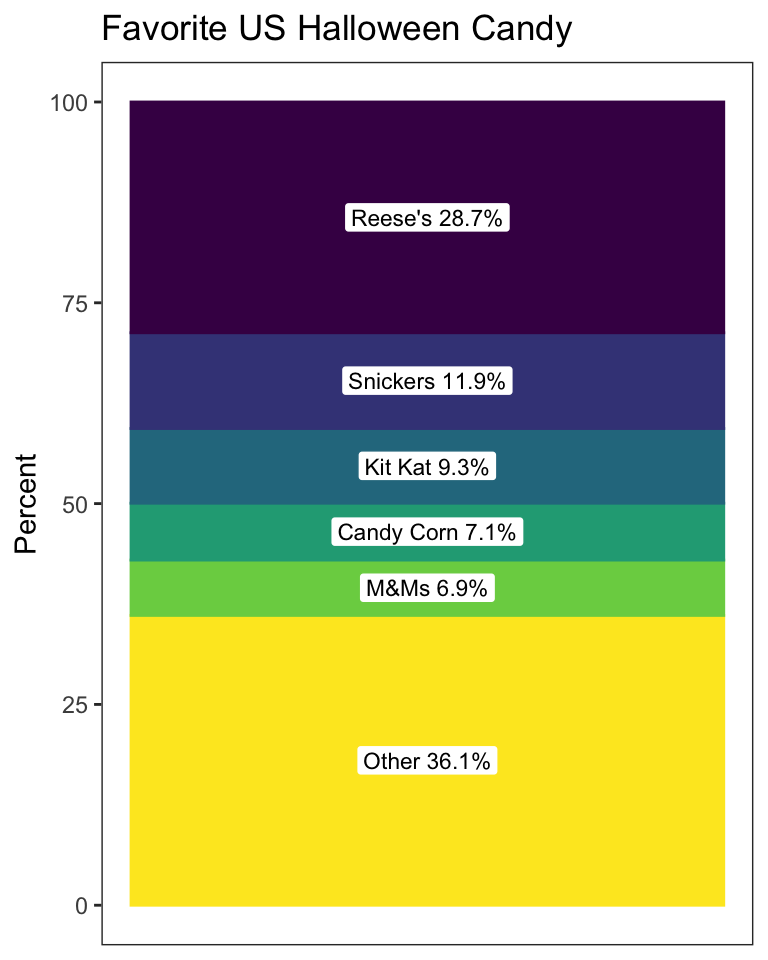
Favorite Halloween Candy
Coordinates: Polar
base_plot +
labels + polar_extras +
geom_col(aes(x = 0),
position = "stack") +
geom_label(aes(x = 0.65, y = pos),
text.color = "black",
fill = "white",
size = 3) +
coord_polar(theta = "y", start = pi)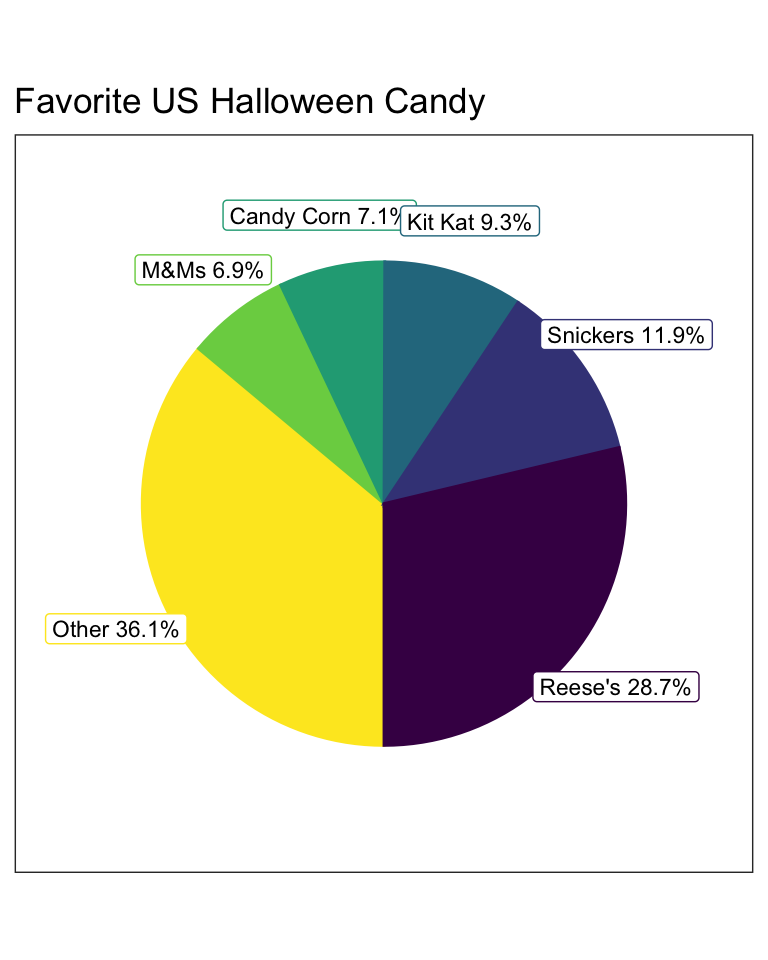
Favorite Halloween Candy
Coordinates: Polar
base_plot +
labels + polar_extras +
geom_col(aes(x = 2),
position = "stack") +
geom_label(aes(x = 2.75, y = pos),
text.color = "black",
fill = "white",
size = 3) +
coord_polar(theta = "y", start = pi) +
scale_x_continuous(limits = c(0, 3))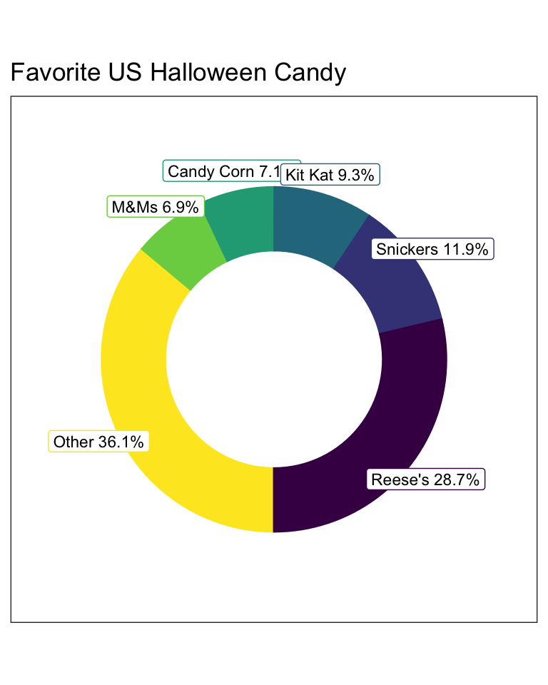